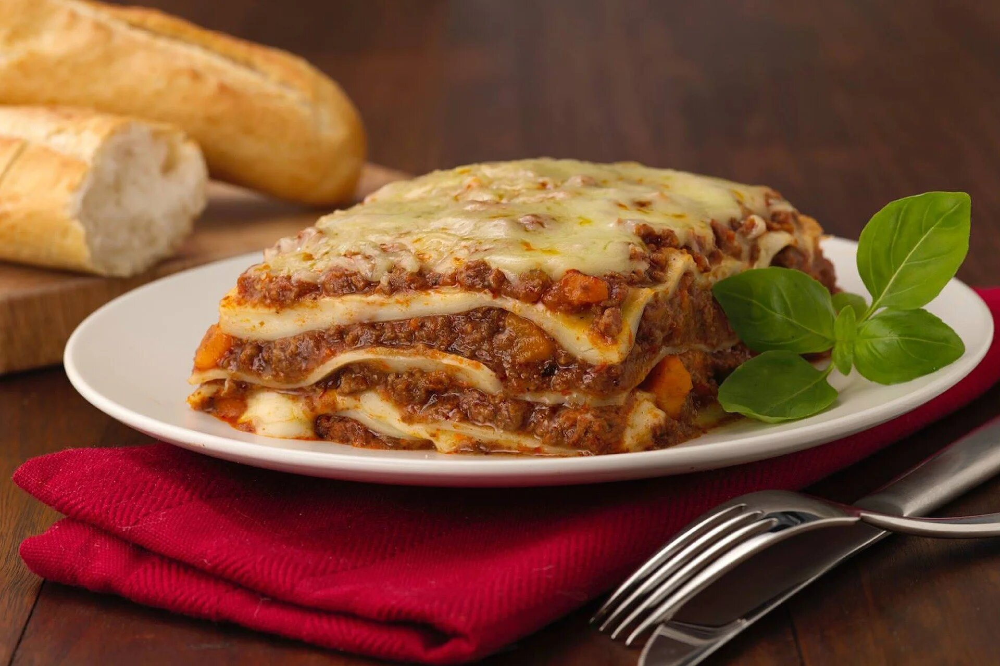

Lasanha

Descrição
Uma lasanha saborosa e deliciosa, perfeita para uma refeição completa e satisfatória.
INGREDIENTES
- 500g de massa de lasanha
- 500g de carne moída
- 1 cebola picada
- 2 dentes de alho picados
- 2 xícaras de molho de tomate
- 400g de presunto fatiado
- 400g de queijo mussarela fatiado
- Queijo parmesão ralado a gosto
- Azeite a gosto
- Sal e pimenta-do-reino a gosto
PASSOS
- Cozinhe a massa de lasanha conforme as instruções da embalagem, escorra e reserve.
- Em uma panela, aqueça um fio de azeite e refogue a cebola e o alho até ficarem macios.
- Acrescente a carne moída e mexa até dourar.
- Adicione o molho de tomate, tempere com sal e pimenta-do-reino e cozinhe por cerca de 10 minutos.
- Em um refratário, espalhe um pouco do molho no fundo e faça camadas de massa, presunto, mussarela e molho.
- Repita as camadas até acabarem os ingredientes, terminando com molho e queijo por cima.
- Polvilhe o parmesão ralado.
- Cubra com papel alumínio e leve ao forno preaquecido a 200°C por 25 minutos.
- Retire o papel alumínio e deixe mais 10 minutos para gratinar.
- Espere descansar uns 10 minutos antes de cortar e servir.
Home